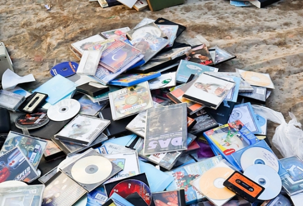

K-POP 앨범, 플라스틱 폐기물 1983톤 발생
플라스틱 부과금에 대한 기준 강화 방안 마련 필요
K-POP 앨범제작에 사용되는 플라스틱에 대한 환경오염 논란이 끊이지 않고 있음에도 불구 하고, 앨범에 사용되는 플라스틱 폐기물은 계속 증가하는 것으로 밝혀졌다. 국회 환경노동위원회 이용우 의원(더불어민주당, 인천 서구을)이 2020년부터 2023년까지 한국콘텐츠진흥원과 환경부로부터 제출받은 자료를 분석한 결과 해마다 음반판매량에 부과된 각 폐기물부담금, EPR분담금이 앨범판매량의 증가율과 달라 모호한 기준에 대한 논란이 제기 되고 있다.